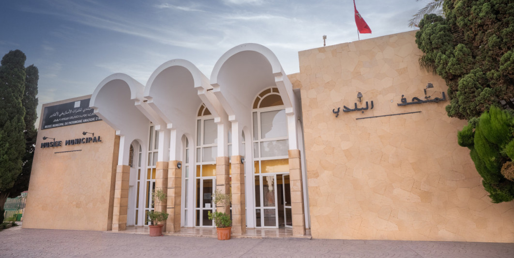
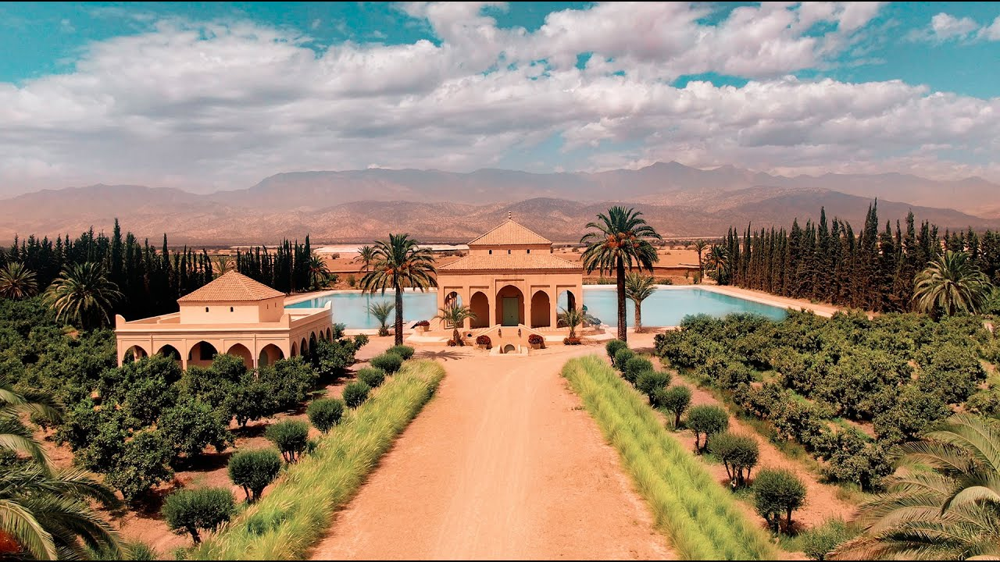
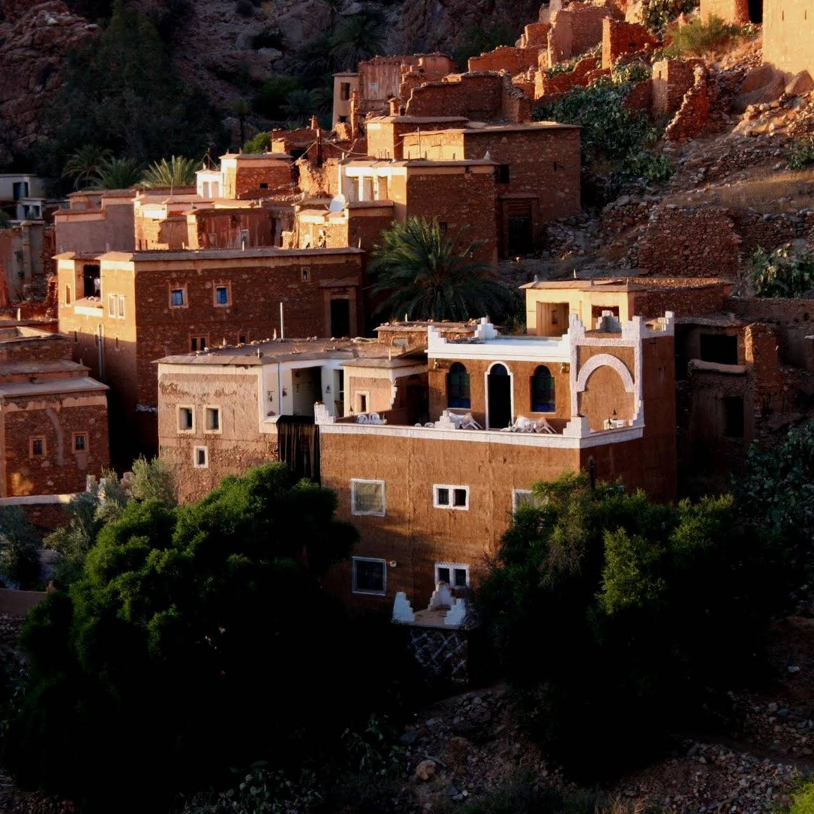
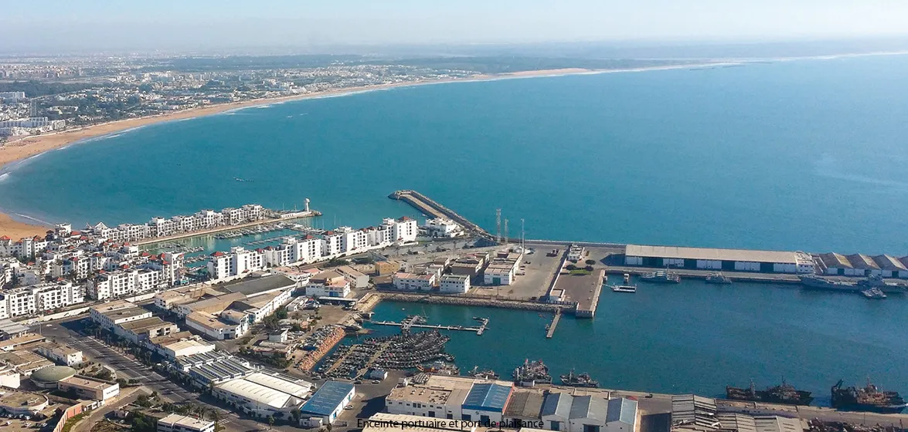
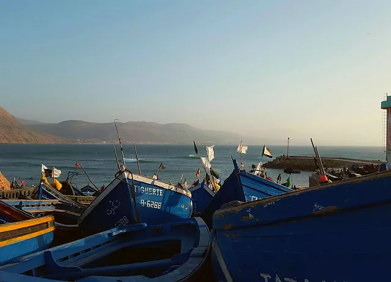
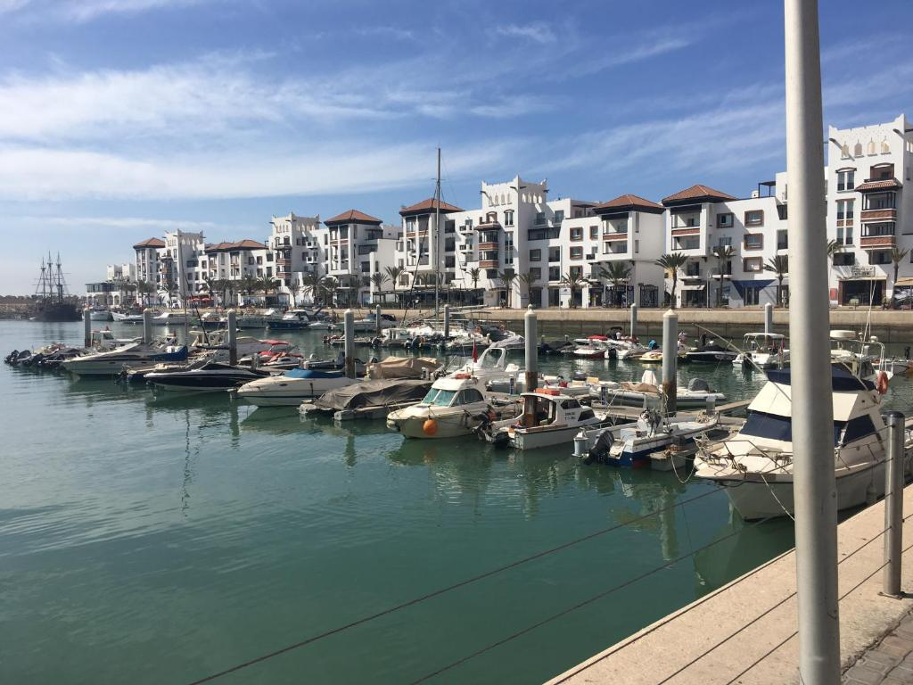
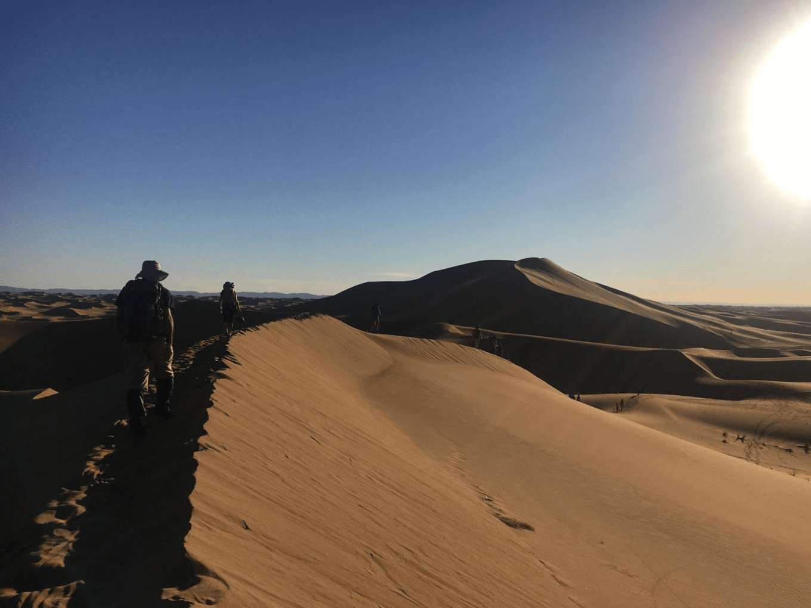
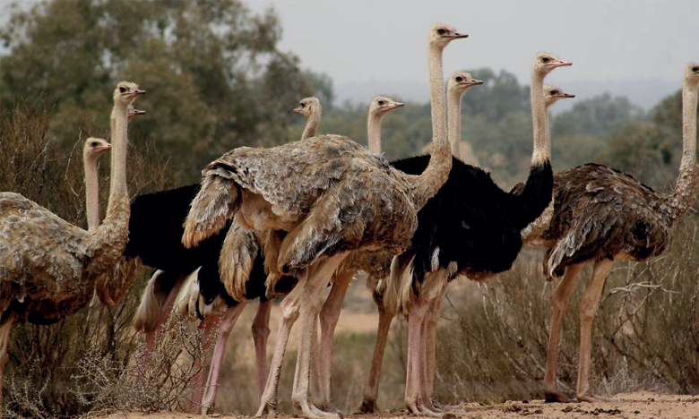
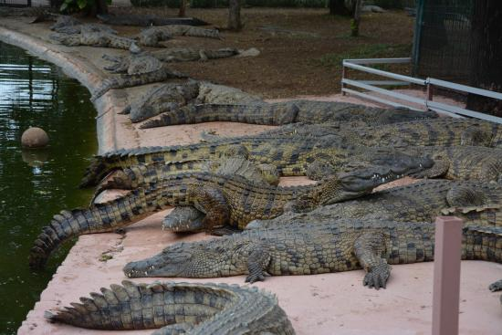
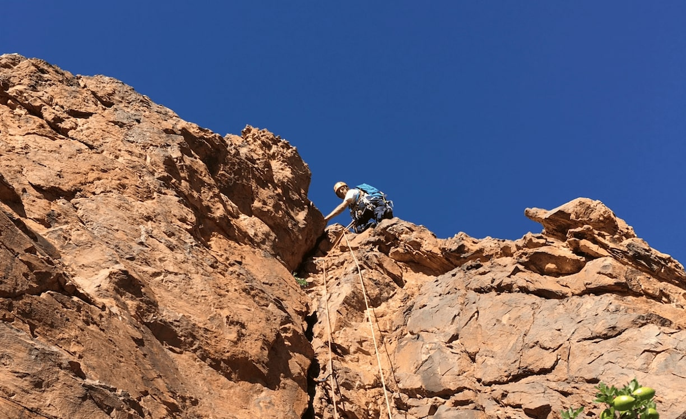

<!DOCTYPE html>
<html lang="en">
<head>
	<base target="_top">
	<meta charset="utf-8">
	<meta name="viewport" content="width=device-width, initial-scale=1">
	
	<title>GEOSOUSS - Carte interactive</title>
	
	<link rel="shortcut icon" type="image/x-icon" href="docs/images/favicon.ico" />
	<link rel="stylesheet" href="Interactive/Control.Coordinates.js" />

	<link rel="stylesheet" href="https://d19vzq90twjlae.cloudfront.net/leaflet-0.7.3/leaflet.css" />

    <link rel="stylesheet" href="https://unpkg.com/leaflet@1.9.2/dist/leaflet.css" integrity="sha256-sA+zWATbFveLLNqWO2gtiw3HL/lh1giY/Inf1BJ0z14=" crossorigin=""/>
    <script src="https://unpkg.com/leaflet@1.9.2/dist/leaflet.js" integrity="sha256-o9N1jGDZrf5tS+Ft4gbIK7mYMipq9lqpVJ91xHSyKhg=" crossorigin=""></script>

	<link href="http://netdna.bootstrapcdn.com/font-awesome/4.0.0/css/font-awesome.css" rel="stylesheet">
	<link href="http://netdna.bootstrapcdn.com/bootstrap/3.0.0/css/bootstrap.min.css" rel="stylesheet">
	<link rel="stylesheet" href="Interactive/leaflet.awesome-markers.css">
  

	<link rel="stylesheet" href="https://unpkg.com/leaflet.fullscreen@latest/Control.FullScreen.css" />
	<script src="https://unpkg.com/leaflet.fullscreen@latest/Control.FullScreen.js"></script>

	<link rel="stylesheet" href="https://unpkg.com/leaflet@1.2.0/dist/leaflet.css" />
    <link rel="stylesheet" href="https://unpkg.com/leaflet-routing-machine@latest/dist/leaflet-routing-machine.css" />
    <script src="https://unpkg.com/leaflet@1.2.0/dist/leaflet.js"></script>
    <script src="https://unpkg.com/leaflet-routing-machine@latest/dist/leaflet-routing-machine.js"></script>

	<script src="Interactive/geolet.js"></script>
	<style>
		html, body {
			height: 100%;
			margin: 0;
		}
		.leaflet-container {
			height: 400px;
			width: 600px;
			max-width: 100%;
			max-height: 100%;
		}
        #map { width: 100%; height: 100%; }
	</style>

	
</head>
<body>

<div id='map'></div>
    <script type="text/javascript" src="Interactive/ProvPref.js"></script>
	<script src="Interactive/Control.Coordinates.js"></script>
	<script type="text/javascript" src="Interactive/RoutesPrimaires.js"></script>
	<script type="text/javascript" src="Interactive/RouteSecondaires.js"></script>
	<script type="text/javascript" src="Interactive/RoutesTertiaires.js"></script>
	<script type="text/javascript" src="Interactive/PolyNaturel.js"></script>

	<script src="Interactive/leaflet.awesome-markers.js"></script>

<script>

const info = L.control();

	const cities = L.layerGroup();

	const mAgadir = L.marker([30.644458726905459, -9.537289183504909], {icon: L.AwesomeMarkers.icon({icon: 'flag', prefix: 'glyphicon', markerColor: 'red', spin:false}) }).bindPopup('Préfecture Agadir Ida-Outanane,').addTo(cities);
	const mInzegane = L.marker([30.337345935164834, -9.456570305311878 ], {icon: L.AwesomeMarkers.icon({icon: 'flag', prefix: 'glyphicon', markerColor: 'red', spin:false}) }).bindPopup('Préfecture Inezgane-Aït Melloul,').addTo(cities);
	const mChtouka = L.marker([30.032587862781302, -9.302349142758768], {icon: L.AwesomeMarkers.icon({icon: 'flag', prefix: 'glyphicon', markerColor: 'red', spin:false}) }).bindPopup('Province de Chtouka Aït Baha,').addTo(cities);
	const mTaroudant = L.marker([30.455666448868442, -8.423668525034769], {icon: L.AwesomeMarkers.icon({icon: 'flag', prefix: 'glyphicon', markerColor: 'red', spin:false}) }).bindPopup('Province de Taroudant,').addTo(cities);
    const mTata = L.marker([ 29.569401268247208, -7.841429437525087], {icon: L.AwesomeMarkers.icon({icon: 'flag', prefix: 'glyphicon', markerColor: 'red', spin:false}) }).bindPopup('Province de Tata,').addTo(cities);
    const mTiznit = L.marker([29.626752631102431 , -9.342359532152955], {icon: L.AwesomeMarkers.icon({icon: 'flag', prefix: 'glyphicon', markerColor: 'red', spin:false}) }).bindPopup('Province de Tiznit,').addTo(cities);
  
	const mbAttr = 'Map data &copy; <a href="https://www.openstreetmap.org/copyright">OpenStreetMap</a> contributors, Imagery © <a href="https://www.mapbox.com/">Mapbox</a>';
	const mbUrl = 'https://api.mapbox.com/styles/v1/{id}/tiles/{z}/{x}/{y}?access_token=pk.eyJ1IjoibWFwYm94IiwiYSI6ImNpejY4NXVycTA2emYycXBndHRqcmZ3N3gifQ.rJcFIG214AriISLbB6B5aw';

	const Esri_Topo = L.tileLayer('https://server.arcgisonline.com/ArcGIS/rest/services/World_Topo_Map/MapServer/tile/{z}/{y}/{x}', {
		maxZoom: 19,
		attribution: '&copy; <a href="https://www.esri.com/en-us/home">Powered by Esri</a>'
	});

	const map = L.map('map', {
		center: [29.6332,-8.7067],
		zoom: 8,
		layers: [Esri_Topo, cities]
	});

	const baseLayers = {
		'Esri Topo': Esri Topo,
		
	};

	const overlays = {
		'Cities': cities
	};
  
	
	const layerControl = L.control.layers(baseLayers, overlays).addTo(map);

	      const PatAM = L.marker([30.416041481748632, -9.596996959925129], {icon: L.AwesomeMarkers.icon({icon: 'picture', prefix: 'glyphicon', markerColor: 'green', spin:false}) }).bindPopup(function (layer) {
        return ( "</b><br> <center> </center>"
		+"<center> <b> Musée du Patrimoine AMAZIGH </b>" 
        + '<br> <center> <b> Nationalité: </b>'
        + '<br> <center> <b> Date de réalisation: </b>' ) }
		).addTo(map);
	      const ClBra = L.marker([30.476880106542417, -8.872502090864593], {icon: L.AwesomeMarkers.icon({icon: 'picture', prefix: 'glyphicon', markerColor: 'green', spin:false}) }).bindPopup(function (layer) {
        return ( "</b><br> <center> </center>"
		+"<center> <b> Musée Claudio BRAVO </b>" 
        + '<br> <center> <b> Le Palais Claudio Bravo est un lieu magique, encore baigné de la présence de Claudio Bravo, le grand peintre hyperréaliste qui l a construit. Depuis 1972, l artiste, d origine chilienne, avait fait du Maroc son lieu de vie et de créativité. </b>'
        + '<br> <center> <b> Réservation : Booking.com </b>' ) }
		).addTo(map);
          const Tafraout = L.marker([29.76527888147166, -8.94279280518594], {icon: L.AwesomeMarkers.icon({icon: 'picture', prefix: 'glyphicon', markerColor: 'green', spin:false}) }).bindPopup(function (layer) {
        return ( "</b><br> <center> </center>"
		+"<center> <b> Maison traditionnelle de TAFRAOUT </b>" 
        + '<br> <center> <b>  La Maison Traditionnelle Maison d Hôte propose des hébergements acceptant les animaux domestiques, un restaurant, une terrasse bien exposée et une connexion Wi-Fi gratuite. </b>'
        + '<br> <center> <b> Réservation: Booking.com / Airbnb.com. </b>' ) }
		).addTo(map);
         
	   const Musee = L.layerGroup([PatAM, ClBra, Tafraout]);


         const pagadir = L.marker([30.42, -9.64], {icon: L.AwesomeMarkers.icon({icon: 'move', prefix: 'glyphicon', markerColor: 'blue', spin:false}) }).bindPopup(function (layer) {
        return ( "</b><br> <center> </center>"
		+"<center> <b> Port AGADIR</b>" 
        + '<br> <center> <b> Nationalité: </b>'
        + '<br> <center> <b> Date de réalisation: </b>' ) }
		).addTo(map);
         const pImssouane = L.marker([30.84, -9.82], {icon: L.AwesomeMarkers.icon({icon: 'move', prefix: 'glyphicon', markerColor: 'blue', spin:false}) }).bindPopup(function (layer) {
        return ( "</b><br> <center> </center>"
		+"<center> <b> Port IMSSOUANE </b>" 
        + '<br> <center> <b> Nationalité: </b>'
        + '<br> <center> <b> Date de réalisation: </b>' ) }
		).addTo(map);
         const pMarina = L.marker([30.42, -9.62], {icon: L.AwesomeMarkers.icon({icon: 'move', prefix: 'glyphicon', markerColor: 'blue', spin:false}) }).bindPopup(function (layer) {
        return ( "</b><br> <center> </center>"
		+"<center> <b> Port MARINA </b>" 
        + '<br> <center> <b> Nationalité: </b>'
        + '<br> <center> <b> Date de réalisation: </b>' ) }
		).addTo(map);

      const ports = L.layerGroup([pagadir, pImssouane, pMarina]);


	  

	      const Connectinstitute = L.marker([30.447056068941524, -9.577919718595552], {icon: L.AwesomeMarkers.icon({icon: 'bookmark', prefix: 'glyphicon', markerColor: 'red', spin:false}) }).bindPopup('Connect institute.');
	      const Siwane = L.marker([30.4384065794635, -9.553835251191966], {icon: L.AwesomeMarkers.icon({icon: 'bookmark', prefix: 'glyphicon', markerColor: 'red', spin:false}) }).bindPopup('Ecole Siwane.');
          const Tesslaoui = L.marker([30.43159824890331, -9.579927778369607], {icon: L.AwesomeMarkers.icon({icon: 'bookmark', prefix: 'glyphicon', markerColor: 'red', spin:false}) }).bindPopup('Lycée Reda Esslaoui.');
		  const Lyceeqalam = L.marker([30.413242990581683, -9.537012437616916], {icon: L.AwesomeMarkers.icon({icon: 'bookmark', prefix: 'glyphicon', markerColor: 'red', spin:false}) }).bindPopup('Lycée Privé Al QALAM.');
		  const ESMS = L.marker([30.42034866148336, -9.548685410301648], {icon: L.AwesomeMarkers.icon({icon: 'bookmark', prefix: 'glyphicon', markerColor: 'red', spin:false}) }).bindPopup('ESMS Business School.');
		  const EPTP = L.marker([30.41886835604365, -9.568598128410896], {icon: L.AwesomeMarkers.icon({icon: 'bookmark', prefix: 'glyphicon', markerColor: 'red', spin:false}) }).bindPopup('Ecole Polyvalente De Technologie Privee.');
		  const CMC = L.marker([30.401295089561238, -9.464701260631388], {icon: L.AwesomeMarkers.icon({icon: 'bookmark', prefix: 'glyphicon', markerColor: 'red', spin:false}) }).bindPopup('CMC SOUSS MASSA.');
		  const EcoleHéritage = L.marker([30.47907718206719, -8.862834046790272], {icon: L.AwesomeMarkers.icon({icon: 'bookmark', prefix: 'glyphicon', markerColor: 'red', spin:false}) }).bindPopup('Ecole Héritage.');
		  const CampusScienceSanté = L.marker([30.47804159480294, -8.877253601283192], {icon: L.AwesomeMarkers.icon({icon: 'bookmark', prefix: 'glyphicon', markerColor: 'red', spin:false}) }).bindPopup('Campus Science de Santé Privé - CSSP.');
		  const Pigier = L.marker([30.467389200748055, -8.884463378529645], {icon: L.AwesomeMarkers.icon({icon: 'bookmark', prefix: 'glyphicon', markerColor: 'red', spin:false}) }).bindPopup('Pigier.');
		  const ÉcoleBrahim  = L.marker([30.467463179724803, -8.883433410351579], {icon: L.AwesomeMarkers.icon({icon: 'bookmark', prefix: 'glyphicon', markerColor: 'red', spin:false}) }).bindPopup('École Brahim Roudani.');
		  const iqraa = L.marker([30.465761649043063, -8.874163696748997], {icon: L.AwesomeMarkers.icon({icon: 'bookmark', prefix: 'glyphicon', markerColor: 'red', spin:false}) }).bindPopup('Etablissement iqraa.');
		  const GroupeScolaireOmega = L.marker([30.465835629256034, -8.892188139865128], {icon: L.AwesomeMarkers.icon({icon: 'bookmark', prefix: 'glyphicon', markerColor: 'red', spin:false}) }).bindPopup('Groupe Scolaire Omega.');
		  const Roudana = L.marker([30.472641568079073, -8.895878859825151], {icon: L.AwesomeMarkers.icon({icon: 'bookmark', prefix: 'glyphicon', markerColor: 'red', spin:false}) }).bindPopup('École Roudana.');
		  const LycéeSidi = L.marker([30.473825161125372, -8.863864015623644], {icon: L.AwesomeMarkers.icon({icon: 'bookmark', prefix: 'glyphicon', markerColor: 'red', spin:false}) }).bindPopup('Lycée Sidi Ou Sidi.');
		  const EcoleZaouiatSidiDaoud = L.marker([30.459103199410503, -8.903431959797624], {icon: L.AwesomeMarkers.icon({icon: 'bookmark', prefix: 'glyphicon', markerColor: 'red', spin:false}) }).bindPopup('École Zaouiat Sidi Daoud.');
		  const Baraem = L.marker([29.750968720227974, -7.973064809642616], {icon: L.AwesomeMarkers.icon({icon: 'bookmark', prefix: 'glyphicon', markerColor: 'red', spin:false}) }).bindPopup('Ecole Baraem Privé.');
		  const Ecole = L.marker([29.749598725455538, -7.970606805547141], {icon: L.AwesomeMarkers.icon({icon: 'bookmark', prefix: 'glyphicon', markerColor: 'red', spin:false}) }).bindPopup('Ecole Primaire.');
		  const NouveauLycéedeTata= L.marker([29.749058626233097, -7.969180556309372], {icon: L.AwesomeMarkers.icon({icon: 'bookmark', prefix: 'glyphicon', markerColor: 'red', spin:false}) }).bindPopup('Nouveau Lycée de Tata.');
		  const LycéeAllalBenAbdellah = L.marker([29.747688605369905, -7.963885226507699], {icon: L.AwesomeMarkers.icon({icon: 'bookmark', prefix: 'glyphicon', markerColor: 'red', spin:false}) }).bindPopup('CMC SOUSS MASSA.');
		  const ISTATata = L.marker([29.746120962401072, -7.956405003922714], {icon: L.AwesomeMarkers.icon({icon: 'bookmark', prefix: 'glyphicon', markerColor: 'red', spin:false}) }).bindPopup('ISTA Tata.');
		  const CollègeAlMokhtarEssoussi = L.marker([29.743249082186786, -7.969165383451303], {icon: L.AwesomeMarkers.icon({icon: 'bookmark', prefix: 'glyphicon', markerColor: 'red', spin:false}) }).bindPopup('Collège Al Mokhtar Essoussi.');
		  const Taldnountprimaryschool= L.marker([29.718410334570724, -7.993031667788201], {icon: L.AwesomeMarkers.icon({icon: 'bookmark', prefix: 'glyphicon', markerColor: 'red', spin:false}) }).bindPopup('Taldnount primary school.');
		  const ISTATiznit = L.marker([29.691399276201142, -9.718593218739219], {icon: L.AwesomeMarkers.icon({icon: 'bookmark', prefix: 'glyphicon', markerColor: 'red', spin:false}) }).bindPopup('ISTA Tiznit.');
		  const LesÉcolesRyadNakhil = L.marker([29.68551771933933, -9.717245058379323], {icon: L.AwesomeMarkers.icon({icon: 'bookmark', prefix: 'glyphicon', markerColor: 'red', spin:false}) }).bindPopup('Les Écoles Ryad Nakhil.');
		  const IBNMAJA= L.marker([29.68761934279561, -9.713423516258196], {icon: L.AwesomeMarkers.icon({icon: 'bookmark', prefix: 'glyphicon', markerColor: 'red', spin:false}) }).bindPopup('Collège IBN MAJA .');
		  const IBNhazm= L.marker([29.688654909258098, -9.712073705120291], {icon: L.AwesomeMarkers.icon({icon: 'bookmark', prefix: 'glyphicon', markerColor: 'red', spin:false}) }).bindPopup('Ecole IBN HAZM .');
		  const LycéeALMASSIRA = L.marker([29.700517278205403, -9.739780021403146], {icon: L.AwesomeMarkers.icon({icon: 'bookmark', prefix: 'glyphicon', markerColor: 'red', spin:false}) }).bindPopup('Lycée AL MASSIRA.');
		  const EcolePrimaireMoulayEzzine= L.marker([29.703647395847973, -9.746736001019269], {icon: L.AwesomeMarkers.icon({icon: 'bookmark', prefix: 'glyphicon', markerColor: 'red', spin:false}) }).bindPopup('Ecole Primaire Moulay Ezzine .');
		  const EcoleAlManar= L.marker([29.6913036145684, -9.743316107309068], {icon: L.AwesomeMarkers.icon({icon: 'bookmark', prefix: 'glyphicon', markerColor: 'red', spin:false}) }).bindPopup('École Al Manar .');
		 
		 
         
	   const Enseignement = L.layerGroup([Connectinstitute, Siwane, Tesslaoui,Lyceeqalam, ESMS, EPTP, CMC, EcoleHéritage ,CampusScienceSanté , Pigier, ÉcoleBrahim  ,iqraa ,GroupeScolaireOmega ,Roudana ,LycéeSidi ,EcoleZaouiatSidiDaoud ,Baraem , Ecole, NouveauLycéedeTata ,LycéeAllalBenAbdellah ,ISTATata ,CollègeAlMokhtarEssoussi ,Taldnountprimaryschool, LesÉcolesRyadNakhil, IBNMAJA, ISTATiznit, IBNhazm, LycéeALMASSIRA, EcolePrimaireMoulayEzzine, EcoleAlManar  ]);


	     const ANCFCCA = L.marker([30.472207425468635, -9.60955694267397], {icon: L.AwesomeMarkers.icon({icon: 'font', prefix: 'glyphicon', markerColor: 'red', spin:false}) }).bindPopup('Agence nationale de la conservation foncière du cadastre et de la cartographie d Agadir.');
         const ANCFCCI = L.marker([30.424851699051327, -9.54363897927784], {icon: L.AwesomeMarkers.icon({icon: 'font', prefix: 'glyphicon', markerColor: 'red', spin:false}) }).bindPopup('Agence Nationale de la Conservation Foncière du cadastre et de la cartographie Inzegane Ait Melloul.');
         const ANCFCCT = L.marker([29.75528705730901, -9.730968566803714], {icon: L.AwesomeMarkers.icon({icon: 'font', prefix: 'glyphicon', markerColor: 'red', spin:false}) }).bindPopup('Agence Nationale de la Conservation Foncière du cadastre et de la cartographie TIZNIT.');
		 const ANCFCCTA = L.marker([30.47590582249661, -8.86542991027378], {icon: L.AwesomeMarkers.icon({icon: 'font', prefix: 'glyphicon', markerColor: 'red', spin:false}) }).bindPopup('Agence Nationale de la Conservation Foncière du cadastre et de la cartographie TAROUDANT.');
		 const ANCFCCC = L.marker([30.319840515732004, -9.395288739215978], {icon: L.AwesomeMarkers.icon({icon: 'font', prefix: 'glyphicon', markerColor: 'red', spin:false}) }).bindPopup('Agence Nationale de la Conservation Foncière du cadastre et de la cartographie CHTOUKA AIT BAHA.');
      const ANCFCC = L.layerGroup([ANCFCCA, ANCFCCI, ANCFCCT, ANCFCCTA]);

	  const IRIQUI = L.marker([29.841885740569435, -6.516469731346426], {icon: L.AwesomeMarkers.icon({icon: 'sign-blank', prefix: 'glyphicon', markerColor: 'green', spin:false}) }).bindPopup(function (layer) {
         return ( "</b><br> <center> </center>"
		+"<center> <b> Parc National IRIQUI</b>" 
        + '<br> <center> <b> Le parc national d Iriqui fait partie des parcs nationaux du Maroc et s étend sur 123 000 hectares. </b>'
        + '<br> <center> <b> C est un parc saharien créé en 1994 pour les espèces désertiques </b>' ) }
		).addTo(map);
		 const AGZIFN = L.marker([29.993256677373967, -9.655457293289858], {icon: L.AwesomeMarkers.icon({icon: 'sign-blank', prefix: 'glyphicon', markerColor: 'green', spin:false}) }).bindPopup('Parc AGZIFN.');
		 const Ecomusé = L.marker([30.058490325585492, -9.654718871987745], {icon: L.AwesomeMarkers.icon({icon: 'sign-blank', prefix: 'glyphicon', markerColor: 'green', spin:false}) }).bindPopup(function (layer) {
         return ( "</b><br> <center> </center>"
		+"<center> <b> Parc National de Souss - Ecomusée </b>" 
        + '<br> <center> <b> Le Parc national de Souss-Massa s’étend sur une superficie de 33 800 ha. </b>'
        + '<br> <center> <b> le Parc national de Souss-Massa a connu un zonage d aménagement qui tient compte des différentes vocations des espaces, des contraintes socio-économiques </b>' ) }
		).addTo(map);
		 const CROCPARK = L.marker([30.39412070467774, -9.484023026261823], {icon: L.AwesomeMarkers.icon({icon: 'sign-blank', prefix: 'glyphicon', markerColor: 'green', spin:false}) }).bindPopup(function (layer) {
         return ( "</b><br> <center> </center>"
		+"<center> <b> Crocoparc Agadir Jardin botanique et parc animalier</b>" 
        + '<br> <center> <b>Crocoparc Agadir est le premier parc zoologique de crocodiles au Maroc, ouvert en mai 2015 dans la banlieue d Agadir. </b>'
        + '<br> <center> <b> Il abrite 325 crocodiles du Nil au sein d un jardin botanique s étendant sur environ 4 hectares. </b>' ) }
		).addTo(map);
		 const CLIMBING = L.marker([30.370455473958078, -9.568262771650074], {icon: L.AwesomeMarkers.icon({icon: 'sign-blank', prefix: 'glyphicon', markerColor: 'green', spin:false}) }).bindPopup(function (layer) {
         return ( "</b><br> <center> </center>"
		+"<center> <b> Climbing Parc AGADIR</b>" 
        + '<br> <center> <b> L’accrobranche d’Agadir également appelé Souss Park est un complexe de 2 hectares proposant des activités sportives et ludiques aux enfants ainsi qu’aux adultes. </b>'
        + '<br> <center> <b> Ce parc installé au milieux d’une forêt d’eucalyptus est accessible à tous les niveaux, des amateurs aux plus sportifs. </b>' ) }
		).addTo(map);
		 const GreenP = L.marker([30.3191262277756, -9.16939849308906], {icon: L.AwesomeMarkers.icon({icon: 'sign-blank', prefix: 'glyphicon', markerColor: 'green', spin:false}) }).bindPopup('GREEN PARK HOUARA.');
      const Parcs = L.layerGroup([IRIQUI, AGZIFN, Ecomusé, CROCPARK, CLIMBING, GreenP ]);


	const satellite = L.tileLayer(mbUrl, {id: 'mapbox/satellite-v9', tileSize: 512, zoomOffset: -1, attribution: mbAttr});
	layerControl.addBaseLayer(satellite, 'Satellite');
    
	layerControl.addOverlay(Musee, 'Musées');
    layerControl.addOverlay(ports, 'Ports de pêche');
	layerControl.addOverlay(Enseignement, 'Enseignement');
	layerControl.addOverlay(ANCFCC, 'ANCFCC');
	layerControl.addOverlay(Parcs, 'Parcs');

    var geojson = L.geoJson(Province, {
        fillOpacity: 0,
	}).addTo(map);

	const geojson1 = L.geoJson(RoutesP, {
      fillOpacity: 0.8,
	  color: "#F43A0D",
	  radius: 2,
	})
	
	const geojson2 = L.geoJson(RoutesS, {
      fillOpacity: 0.8,
	  color: "#f4a30d",
	})
	
	const geojson3 = L.geoJson(RoutesT, {
      fillOpacity: 0.8,
	  color: "#f0e40a",
	})

	const geojson4 = L.geoJson(Poly, {
      fillOpacity: 0.8,
	  color: "#31a354",
	})
	
    layerControl.addOverlay(geojson1, 'Routes Nationales');
	layerControl.addOverlay(geojson2, 'Routes Régionales');
	layerControl.addOverlay(geojson3, 'Routes Provinciales');
	layerControl.addOverlay(geojson4, 'Natural');

L.layerJSON({url: "search.php?lat1={lat1}&lat2={lat2}&lon1={lon1}&lon2={lon2}" }).addTo(map);
</script>
<script>

var c = new L.Control.Coordinates();
		c.addTo(map);

		function onMapClick(e) {
			c.setCoordinates(e);
		}

		map.on('click', onMapClick);

L.geolet({
				position: 'bottomleft'
			}).addTo(map)

var fsControl = L.control.fullscreen();
		// add fullscreen control to the map
		map.addControl(fsControl);

		// detect fullscreen toggling
		map.on('enterFullscreen', function(){
			if(window.console) window.console.log('enterFullscreen');
		});
		map.on('exitFullscreen', function(){
			if(window.console) window.console.log('exitFullscreen');
		});


</script>
<script>

var taxiIcon = L.icon({
			iconUrl: 'Interactive/images/pin.png',
			iconSize: [70, 70]
		})

		var marker = L.marker([30.413823, -9.551591], { icon: taxiIcon }).addTo(map);

		map.on('click', function (e) {
			console.log(e)
			var newMarker = L.marker([e.latlng.lat, e.latlng.lng]).addTo(map);
			L.Routing.control({
				waypoints: [
					L.latLng(30.413823, -9.551591),
					L.latLng(e.latlng.lat, e.latlng.lng)
				]
			}).on('routesfound', function (e) {
				var routes = e.routes;
				console.log(routes);

				e.routes[0].coordinates.forEach(function (coord, index) {
					setTimeout(function () {
						marker.setLatLng([coord.lat, coord.lng]);
					}, 100 * index)
				})

			}).addTo(map);
		});
</script>
</body>
</html>
